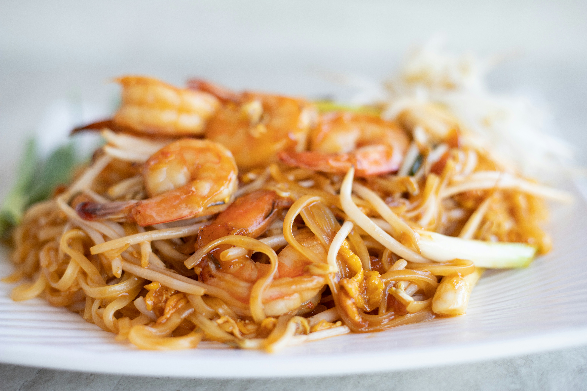

A classic breakfest option in Taiwan using crepe on top of whisked eggs.
| 80g of Cake Flour |
| 20g of tapioca starch |
| 150g water |
| 1/2 teaspoon of salt |
| 1 green onion chopped |
| 3 eggs |
Pan Thai is an asian cuisine with any sort of meat and vegetables in a peanut sauce

| 4 Tbsp Fish sauce |
| 4 Tbsp Sugar |
| Tamarind paste |
| lime juice |
| Rice wine vinegar |
| Chili sauce |
| Rice sticks |
| Oil |
| Garlic |
| Tofu |
| Powdered shrimp |
| Chicken |
| Eggs |
| Turnip |
| Shrimp |
| Bean sprouts |
| Peanuts |
| Scallions |
An Italian dish consist of fsh basil, garlic cloves, pine nuts, parmesan cheese, and olive oil on gnocchi pasta

| Ingredients: | |
|---|---|
| Potato Gnocchi - 1 lb | |
| Basil Pesto - 1/2 cup | |
| Parmesan Cheese for serving | |
| Reserved Pasta Water - 2 to 3 tablespoons | |
| Salt and Black Pepper |